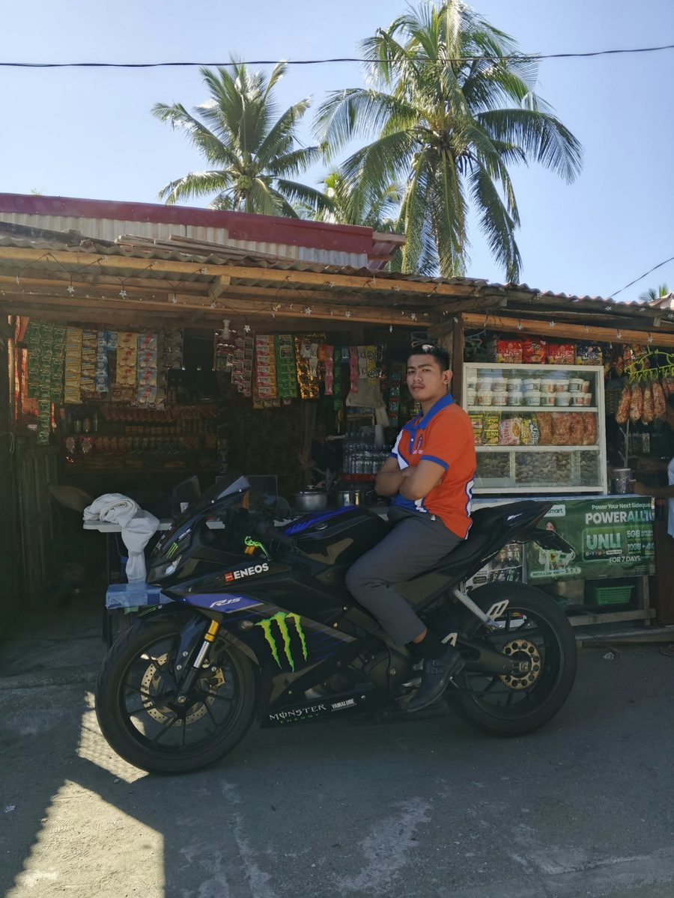

Welcome to My Portfolio

Hello! I am Anthony Joel Mercado, a college student at Aurora State College of Technology.
This website was created as part of a digital ethics and deployment assignment. My mission is to build clean, accessible, and ethically sourced web projects.
About Me
I am a college student at Aurora State College of Technology, taking a Bachelor of Science in Information Technology (BSIT). As a student, I am learning how websites, databases, and software are planned, built, and kept secure.
This portfolio is one of my course projects. Through it I am practicing HTML and CSS, writing accessible pages with descriptive image text, and respecting copyright and user privacy in everything I publish. I hope to keep growing my skills and build technology that is useful and fair to the people who use it.